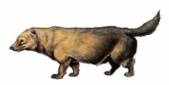
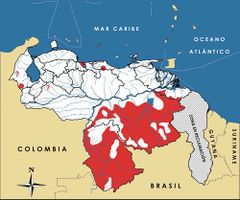

Speothos venaticus
| Perro de monte | |
|---|---|
|  | |
| Riesgo de extinción | |
 Vulnerable (UICN) | |
| Clasificación científica | |
| Reino: | Animalia |
| Filo: | Chordata |
| Clase: | Mammalia |
| Orden: | Carnivora |
| Familia: | Canidae |
| Género: | Speothos |
| Especie: | Speothos venaticus |
| Nombre binomial | |
|
Speothos venaticus Lund, 1842 | |
| Distribución | |
|
 Mapa de distribución de Speothos venaticus | |
Contenido
Información de Evaluación
- Categoría y Criterio Regional: Vulnerable A2cd
- Fecha de Evaluación Regional: 2015
- Evaluadores: Jesús Morales-Campos y Ariany García-Rawlins
- Categoría y Criterio Global: Casi Amenazado
Justificación
Evaluaciones Previas
1999: Vulnerable (VU)
2008: Vulnerable (VU)
Información General
Nombres comunes
Perro de monte, perro grullero, zorro vinagre, perro vinagre, you`raba (barí), yai (pemón), bush dog, vinegar dog.
Notas taxonómicas
Sinónimos
Descripción
Carnívoro de tamaño mediano, cuerpo alargado y patas cortas, cuyo peso varía entre 4-7 kg. Puede medir de 23 a 30 cm de alto y 60 a 75 cm de longitud, desde la cabeza hasta la base de la cola. Difiere notablemente de otros cánidos por su aspecto similar a un mustélido, caracterizándose por presentar orejas redondeadas, membranas interdigitales y cola corta, de entre 10 y 15 cm (Linares 1998, de Mello Beisiegel y Zuercher 2005). Su pelaje es mediano, suave y denso, de coloración dorsal uniforme, variando de pardo pálido a amarillo ocre. Su cabeza, rostro, cuello y orejas son de un pardo amarillento dorado, mientras que el pelaje de su vientre y cola son pardo oscuro o negro. Los juveniles suelen ser uniformemente negros o grises (Linares 1998, de Mello Beisiegel y Zuercher 2005). Aunque solitario, este cánido puede organizar grupos familiares de hasta diez individuos, conformados por una pareja reproductora monógama y su descendencia. Presenta hábitos diurnos y crepusculares, siendo difícil de observar por ser una especie poco común y críptica. Es un carnívoro especializado, que suele cazar en grupos. Su dieta está compuesta por vertebrados pequeños y medianos, sobre todo roedores, y aves corredoras (Linares 1998, Sillero-Zubiri et al. 2004, de Mello Beisiegel y Zuercher 2005). Es miembro de un género monotípico, con tres subespecies reconocidas, de las cuales dos pudieran estar presentes en el país: S. venaticus panamensis y S. venaticus venaticus (Linares 1998, de Mello Beisiegel y Zuercher 2005).
Distribución
Speothos venaticus presenta una distribución amplia, reportándose en Panamá, Guyana, Guayana Francesa, Surinam, Venezuela, Colombia, Ecuador, Perú, Brasil, Bolivia, Paraguay y Argentina (Eisenberg 1989, Emmons 1990, Aquino y Puertas 1996, Sillero-Zubiri et al. 2004, de Mello Beisiegel y Zuercher 2005). En Venezuela tiene una distribución disjunta, con algunas localidades dispersas al norte del Orinoco, donde se piensa que se encuentra la subespecie S. venaticus panamensis, así como una mayor área de ocupación al sur del Orinoco, donde pudiera conseguirse S. venaticus venaticus. En específico se reporta en bosques húmedos de la sierra de Perijá y Cordillera de la Costa, con énfasis en el parque nacional San Esteban en el estado Carabobo, así como parque nacional Guatopo, y en El Guapo en el estado Miranda. Al sur del Orinoco se registra en la Gran Sabana y la cuenca del río Caura en el estado Bolívar, en la serranía de Imataca entre el estado Bolívar y Delta Amacuro, así como al sur del estado Amazonas, en río Negro y el alto Orinoco (Mondolfi 1976, Bisbal 1987a, Bisbal 1989, Volcan y Medrano 1991, Ochoa-G. 1995). Puede hallarse en una gran variedad de ambientes, principalmente bosques lluviosos y de galería, sabanas inundables y bosques espinosos por debajo de los 1500 m (Eisenberg 1989, Emmons 1990, Aquino y Puertas 1996, Barneit et al. 2001, Sillero-Zubiri et al. 2004, de Mello Beisiegel y Zuercher 2005). Algunos registros provenientes de cazadores indican que pudiera habitar bosques del piedemonte andino (Strahl et al. 1992), lo que sugiere una distribución más amplia. Es una especie de hábitos semiacuáticos, por lo que está vinculada a ríos y cuerpos de agua (Aquino y Puertas 1996, de Mello Beisiegel y Zuercher 2005).
- Sistema: Terrestre
- Bioregión:
- Intervalo altitudinal (m): 1500
- Endémica: No
Situación
A pesar de su amplia distribución, Speothos venaticus está considerada como poco común en la mayoría de las localidades donde se ha reportado. Muchos de los datos existentes provienen de estudios en cautiverio, de registros de cazadores o encuentros eventuales, por lo que existen importantes vacíos de información en relación con su historia natural, ecología y estado de conservación (Eisenberg 1989, Strahl et al. 1992, Sillero-Zubiri et al. 2004, de Mello Beisiegel y Zuercher 2005). Aunque se considera sensible a los ambientes intervenidos, se ha registrado en zonas alteradas por actividad humana, estando ausente en áreas con alta presión antrópica (Sillero-Zubiri et al. 2004, de Mello Beisiegel y Zuercher 2005). Dada su preferencia por ecosistemas boscosos poco intervenidos, en Venezuela las poblaciones que se hallan al norte del río Orinoco pudieran encontrarse muy reducidas y aisladas, siendo probable que estén extintas o cercanas a la extinción. Al sur del río Orinoco, es posible que estén relativamente estables y fuera de amenaza a corto plazo, dada la presencia de extensas áreas boscosas poco intervenidas. Por tanto, de confirmarse la presencia de ambas subespecies en el país, la situación de las poblaciones de S. venaticus panamensis pudiera resultar más crítica que la de S. venaticus venaticus, desconociéndose las implicaciones que esto significaría para la especie en relación con la pérdida de variabilidad genética. Actualmente a escala global está considerada de Preocupación Menor, aunque en el pasado fue clasificada Vulnerable (DeMatteo et al. 2011). En Argentina se califica En Peligro, en Paraguay En Peligro Crítico, en Brasil Amenazada, mientras que en Perú es señalada como una especie Rara, y reportada Vulnerable en Ecuador y Colombia (Pulido 1991, Bertonatti y González 1993, Tirira 2011, Rodríguez-Mahecha et al. 2006).
- EOO (km2): Temporalmente sin información
- AOO (km2): Temporalmente sin información
- Tendencia Poblacional: Decreciendo
Amenazas
A lo largo de toda su distribución, su principal amenaza está relacionada con los procesos de transformación de la cobertura boscosa, que han ocasionado una drástica pérdida y fragmentación de su hábitat natural (Sillero-Zubiri et al. 2004, DeMatteo et al. 2011). En Venezuela, se estima que 22% de la superficie del país ha sufrido importantes transformaciones de la cobertura vegetal (Oliveira-Miranda et al. 2010c), en especial al norte del Orinoco. Muchas de estas áreas coinciden con la distribución de la especie, sin que se conozca el impacto sobre su estado de conservación. Las poblaciones que se encuentran en la Cordillera de la Costa pudieran ser las más amenazadas, al hallarse en la región urbana e industrial más poblada del país. Aunque en esta región existen áreas protegidas que pudieran servir de refugio para la especie, como los parques nacionales San Esteban y Guatopo, se desconoce el estado de conservación de Speothos venaticus en estas áreas. La disminución de sus presas, sobre todo picures, lapas y otros mamíferos medianos, por pérdida de hábitat y cacería, es una amenaza importante (Sillero-Zubiri et al. 2004, de Mello Beisiegel y Zuercher 2005). Su cacería por conflicto con actividades humanas no es frecuente, sin embargo, su cacería comercial para obtener individuos vivos para mascotas, ha sido reportada. El contagio de enfermedades letales de perros domésticos se ha indicado como una amenaza en áreas próximas a asentamientos humanos (Sillero-Zubiri et al. 2004, DeMatteo et al. 2011).
Conservación
Su comercio internacional está regulado, ya que S. venaticus está incluida en el Apéndice I de la Convención sobre el comercio internacional de especies amenazadas de fauna y flora silvestres (Cites 2014). En nuestro país, fue declarada Especie en Peligro de Extinción y se estableció su veda indefinida (Venezuela 1996a, Venezuela 1996b). Dada la falta de información sobre la biología y estado de conservación del perro de monte, es fundamental promover la investigación sobre su ecología, distribución, estado poblacional y amenazas en toda su área de distribución, con énfasis en el norte del Orinoco, para poder plantear planes de manejo efectivos. Esto concuerda con las necesidades identificadas a nivel global por el plan de acción del Grupo de Especialistas de Cánidos de la UICN (Sillero-Zubiri et al. 2004). Además, en Venezuela resulta fundamental evaluar la variabilidad genética, tanto cromosómica como de ADN, para aclarar la presencia de las dos subespecies y, de esta manera poder evaluar su estado de conservación. Las áreas protegidas pudieran servir como importantes herramientas de conservación in situ para este cánido, no obstante se desconoce si las mismas pueden ofrecer una protección adecuada a la especie y sus presas naturales. Por tanto, es fundamental evaluar la efectividad de estas zonas para la conservación del perro de monte, así como identificar y establecer corredores ecológicos que permitan garantizar el mantenimiento de sus poblaciones a largo plazo. Controlar la cacería ilegal de sus presas naturales, sobre todo la fuerte cacería de la lapa y el picure, así como la cacería directa de este carnívoro es una medida fundamental. Para ello es necesario evaluar el marco legal que regula tales actividades, así como iniciar campañas educativas enfocadas a informar sobre el impacto del comercio de estas especies en la biodiversidad en general.
Autorías
Autores originales
Emiliana Isasi-Catalá, Fracisco Bisbal y Ernesto O. Boede
Colaboradores
Ilustrador
Astolfo Mata
Referencias
- Aquino, R. y Puertas, P. (1996). Observaciones preliminares sobre la ecología de Speothos venaticus (Canidae: Carnivora) en su hábitat natural. Folia Amazonia 8(1): 131-143.
- Barneit, A., Shapkey, R. y Engstrom, M. (2001). Records of the bushdog, Speothos venaticus (Lund, 1842), from Guyana. Mammalia 54(2): 232-237.
- Bertonatti, C. y González, F. (1993). Lista de vertebrados argentinos amenazados de extinción (2a ed.). Boletín Técnico de la Fundación Vida Silvestre ArgentinaBuenos Aires, Argentina. 35 pp.
- Bisbal, F. (1987a). The carnivores of Venezuela: Their distribution and the ways they have been affected by human activities. Tesis de Maestría, University of Florida. Gainsville. 129 pp.
- Bisbal, F. (1989). Distribution and habitat association of the carnivores of Venezuela. Páginas: 339-362. En: Redford, K. H. y Eisenberg, J. F. (Eds.). Advances in Neotropical Mammalogy. The Sandhill Crane Press. Gainesville, Florida, USA.
- Cites. (2014). Apéndices I, II y III (válidos desde el 14 de septiembre de 2014). Convención sobre el Comercio Internacional de Especies Amenazadas de Fauna y Flora Silvestres (CITES). 47 pp.
- DeMatteo, K., Michalski, F. y Leite-Pitman, M. R. P. (2011). Speothos venaticus. The IUCN Red List of Threatened Species. Version 2013.2. Disponible en www.iucnredlist.org, consultada el 24 de marzo de 2014.
- de Mello Beisiegel, B. y Zuercher, G. L. (2005). Speothos venaticus. Mammalian Species 783: 1-6.
- Eisenberg, J. F. (1989). Mammals of the Neotropics. The Northern Neotropics (Vol. 1). Panamá, Colombia, Venezuela, Guyana, Suriname, French Guiana. University of Chicago Press. Chicago y Londres. 449 pp.
- Emmons, L. H. (1990). Neotropical Rainforest Mammals, a field guide. University of Chicago Press. Chicago y Londres. 281 pp.
- Isasi-Catalá, E., Bisbal, F. y Boede, E. O. (2015). Perro de monte,Speothos venaticus. En: J.P. Rodríguez, A. García-Rawlins y F. Rojas-Suárez (eds.) Libro Rojo de la Fauna Venezolana. Cuarta edición. Provita y Fundación Empresas Polar, Caracas, Venezuela. Recuperado de: animalesamenazados.provita.org.ve/content/perro-de-monte Vie, 09/03/2018 - 09:55
- Linares, O. J. (1998). Mamíferos de Venezuela. Sociedad conservacionista Audubon. Caracas. 691 pp.
- Mondolfi, E. (1976). Fauna Silvestre de los Bosques Húmedos de Venezuela. Páginas: 113-181. En: Hamilton, L. S., Steyermark, J., Veillon, J. P. y Mondolfi, E. (Eds.). Conservación de los Bosques Húmedos de Venezuela. Sierra Club, Consejo de Bienestar Rural. Caracas.
- Ochoa-G., J. (1995). Los mamíferos de la región de Imataca, Venezuela. Acta Científica Venezolana 46: 274-287.
- Oliveira-Miranda, M. A., Huber, O., Rodríguez, J. P., Rojas-Suárez, F., De Oliveira-Miranda, R., Zambrano-Martínez, S. y Giraldo Hernández, D. (2010c). Riesgo de eliminación de los ecosistemas terrestres de Venezuela. Páginas: 109-235. En: Rodríguez, J. P., Rojas-Suárez, F. y Giraldo Hernández, D. (Eds.). Libro Rojo de los Ecosistemas Terrestres de Venezuela. Provita, Shell Venezuela y Lenovo (Venezuela). Caracas, Venezuela.
- Pulido, V. (1991). El Libro Rojo de La Fauna Silvestre del Perú. Instituto Nacional de Investigación Agraria y Agroindustrial. Lima, Perú. 219 pp.
- Rodríguez-Mahecha, J. V., Alberico, M., Trujillo, F. y Jorgenson, J. (Eds.) (2006). Libro Rojo de los Mamíferos de Colombia. Serie Libros Rojos de Especies Amenazadas de Colombia. Conservación Internacional, Ministerio del Ambiente, Vivienda y Desarrollo Territorial. Bogotá, Colombia. 433 pp.
- Rodríguez, J. P. y Rojas-Suárez, F. (1999). Libro Rojo de la Fauna Venezolana, segunda edición. PROVITA, Fundación Polar. Caracas. 444 pp.
- Rodríguez, J. P. y Rojas-Suárez, F. (Eds.) (2008). Libro Rojo de la Fauna Venezolana, tercera edición. Provita y Shell Venezuela, S. A. Caracas, Venezuela. 364 pp.
- Sillero-Zubiri, C., Hoffmann, M. y MacDonald, D. W. (Eds.) (2004). Canids: foxes, wolves, jackals and dogs. Status survey and conservation action plan. IUCN/SSC Canid Specialist Group. Gland, Switzerland.
- Strahl, S. D., Silva, J. L. y Goldstein, I. R. (1992). The bush dog (Speothos venaticus) in Venezuela. Mammalia 56(1): 9-13.
- Tirira, D. G. (2011). Libro Rojo de los mamíferos del Ecuador. 2a. edición. Fundación Mamíferos y Conservación, Pontificia Universidad Católica del Ecuador y Ministerio del Ambiente del Ecuador. Publicación especial sobre los mamíferos del Ecuador 8. Quito.
- Venezuela. (1996a). Decreto 1485: Animales Vedados para la Caza. Gaceta Oficial No. 36.059 - 7 de octubre de 1996. Caracas.
- Venezuela. (1996b). Decreto 1486: Especies en Peligro de Extinción. Gaceta Oficial No. 36.062- 10 de octubre de 1996. Caracas.
- Volcan, G. S. y Medrano, C. E. (1991). Infección natural de Speothos venaticus (Carnivora: Canidae) por estadios adultos de Lagochilacaris sp. Revista do Instituto de medicina Tropical de Sao Paulo 33: 451-458.